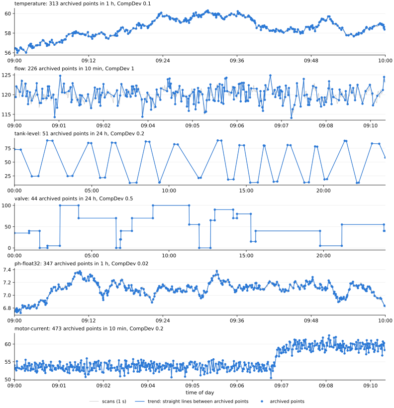
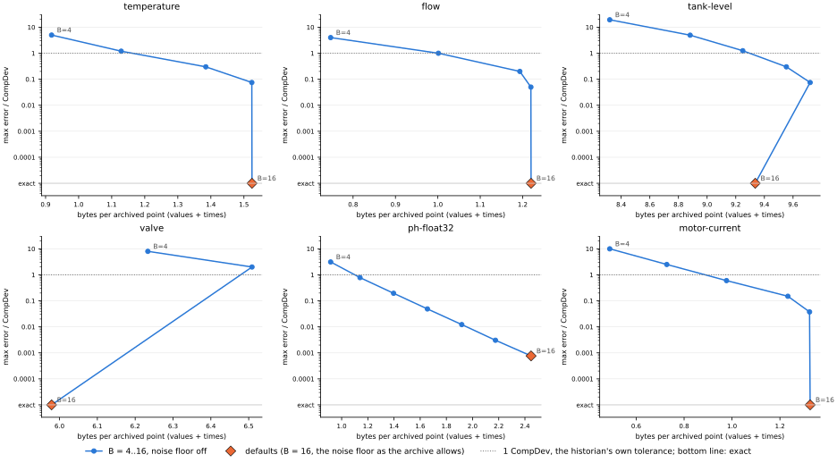
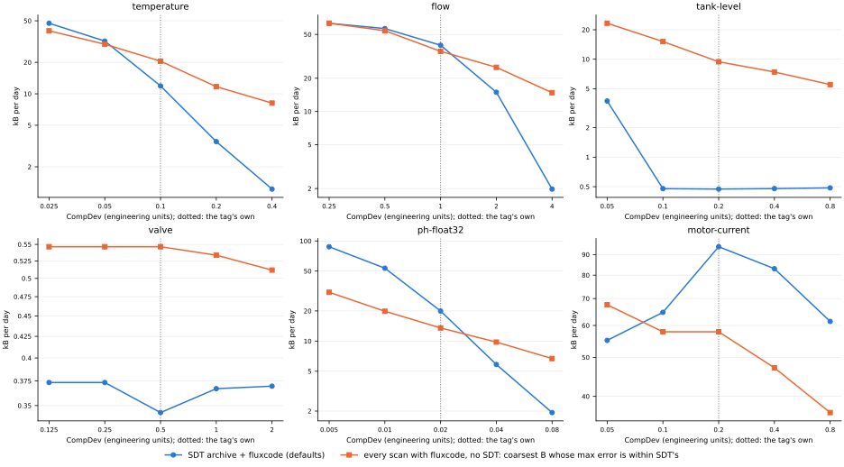

Process historians that use swinging-door trending (SDT, as in PI and similar systems) scan each tag at a fixed rate, drop readings within an exception deadband (ExcDev) of the last reported value, and archive only the points that swinging door retains. The result is an irregular series of actual scans whose connecting straight lines stay close to every snapshot (nominally within CompDev, though up to about twice that in practice). This report measures fluxcode on those exported archives, encoding one block group per tag-day with exact timestamps. The test set covers six simulated tags (5 days each at 1 s scans), ranging from a valve that keeps 1 point per 2,000 scans to a noisy tag with a tight CompDev that keeps nearly every scan.
Always store the archived points themselves. Historians can also export a resampled regular grid (interpolated or forward-filled), but that discards the original points and takes more space—see resampled exports.
Regenerate: cd experimental && uv run python make_sdt_report.py (sizes and
errors only, no timings). The simulator lives in tslab/common/historian.py.
Each tag is scanned once per second for a day, then passed through an exception filter (ExcDev = CompDev / 2, the standard rule, also reporting the scan just before each exception) and swinging-door compression (CompMax = 8 h). Timestamps are whole seconds, matching a regular scan class, and errors are expressed in multiples of CompDev. Because swinging door archives the scan where its doors close, the resulting line is only guaranteed to stay within CompDev at that closing scan; earlier snapshots along the segment can stray by up to 2 CompDevs (about 1.9 here), and the exception filter pushes the total worst-case deviation to roughly 2.5 CompDevs.

| tag | what it is | CompDev | points per day | scans per point | trend vs scans: max | RMS |
|---|---|---|---|---|---|---|
| temperature | Daily cycle + slow drift (τ 30 min) + noise σ 0.03 °C, 0.01 °C resolution | 0.1 | 7,802 | 11.1 | 2.45 | 0.68 |
| flow | Setpoint steps (6/day) through a 60 s lag + process noise (σ 1.5, τ 5 s) + measurement noise σ 0.8, 0.1 resolution: noise above CompDev | 1 | 32,678 | 2.6 | 2.25 | 0.65 |
| tank-level | Fill and drain ramps (0.01–0.05 %/s) between holds + noise σ 0.02 %, 0.01 % resolution | 0.2 | 51 | 1,707.5 | 2.79 | 0.68 |
| valve | Position commands in 5 % steps (30/day), 2 %/s travel, no noise, 0.1 % resolution | 0.5 | 57 | 1,505.2 | 1.96 | 0.06 |
| ph-float32 | pH 7 + slow drift (τ 10 min) + noise σ 0.004, stored as float32 (not decimal) | 0.02 | 8,153 | 10.6 | 2.46 | 0.69 |
| motor-current | Load steps (24/day) through a 10 s lag + noise σ 1 A, 0.01 A resolution: CompDev far below the noise, so most scans are archived | 0.2 | 70,974 | 1.2 | 1.82 | 0.37 |
Points per day is the mean across all days. Trend vs scans shows the worst daily max error and mean RMS error in CompDevs, measured before applying fluxcode.
Total bytes per archived point across all 5 days, including all headers and framing needed to decode. Raw storage is an int64 timestamp plus a float64 value (16 bytes). Both zstd and Gorilla are lossless: zstd-3 compresses the time deltas and values as two columns, while Gorilla uses its delta-of-delta timestamps (in seconds) and XOR value coding. fluxcode encodes one block group per tag-day using 1 h blocks (layout) with exact timestamps; the values and times columns break down that total.
| tag | points per day | raw | zstd | Gorilla | fluxcode defaults | values | times | max error | exact | kB per day | noise floor off | max error |
|---|---|---|---|---|---|---|---|---|---|---|---|---|
| temperature | 7,802 | 16 | 3.52 | 7.73 | 1.52 | 0.83 | 0.70 | exact | 100% | 11.89 | 1.52 | exact |
| flow | 32,678 | 16 | 2.64 | 7.77 | 1.22 | 0.82 | 0.40 | exact | 100% | 39.86 | 1.22 | exact |
| tank-level | 51 | 16 | 11.08 | 10.03 | 9.34 | 5.45 | 3.89 | exact | 100% | 0.47 | 9.34 | exact |
| valve | 57 | 16 | 6.64 | 4.52 | 5.98 | 2.84 | 3.14 | exact | 100% | 0.34 | 5.98 | exact |
| ph-float32 | 8,153 | 16 | 5.01 | 4.08 | 2.45 | 1.80 | 0.64 | 0.00076 | 3% | 19.95 | 2.45 | 0.00076 |
| motor-current | 70,974 | 16 | 2.40 | 7.44 | 1.33 | 1.19 | 0.13 | exact | 100% | 94.12 | 1.33 | exact |
Max error is the worst |decoded − archived| across all days in CompDevs, and exact is the fraction of points decoded bit-for-bit identically. Timestamp bytes are measured as the difference between encoding the same blocks with and without timestamps (with the noise floor off). See the noise floor section for when default settings diverge from having the floor off.
Downstream consumers see the reconstructed trend—straight lines connecting the decoded points—compared against the original 1 s scans. The table reports worst-case errors in CompDevs over the 5 days, showing the historian's own SDT error alongside the combined error after fluxcode.
| tag | SDT alone: max | RMS | + fluxcode defaults: max | RMS | + fluxcode, noise floor off: max | RMS |
|---|---|---|---|---|---|---|
| temperature | 2.445 | 0.679 | 2.445 | 0.679 | 2.445 | 0.679 |
| flow | 2.250 | 0.650 | 2.250 | 0.650 | 2.250 | 0.650 |
| tank-level | 2.785 | 0.678 | 2.785 | 0.678 | 2.785 | 0.678 |
| valve | 1.958 | 0.058 | 1.958 | 0.058 | 1.958 | 0.058 |
| ph-float32 | 2.455 | 0.694 | 2.455 | 0.694 | 2.455 | 0.694 |
| motor-current | 1.817 | 0.368 | 1.817 | 0.368 | 1.817 | 0.368 |
fluxcode's noise floor (0.25σ by default) coarsens the quantization step on blocks whose samples look like white measurement noise. Sparse SDT points mimic white noise without actually being noise, because swinging door specifically retains points that a straight line cannot predict. To avoid misclassifying them, an irregular-time block only enables the noise floor if it has a regular cadence—at least 90% of its intervals equal to one scan (within 0.5× to 1.5× the median of 15 evenly spaced intervals)—and noise is then estimated strictly from consecutive scans. As a result, an archive that retained nearly every scan is treated like raw sensor data and gets the floor, while sparser archives keep their exact values. The table below sweeps five CompDev multipliers per tag (with ExcDev = CompDev / 2, 1 h blocks, across all 5 days) against the same data with the noise floor disabled.
| tag | CompDev | points per day | one-scan share | blocks floored | kB per day | noise floor off | max error | exact |
|---|---|---|---|---|---|---|---|---|
| temperature | 0.025 | 48,119 | 51%–56% | 0 of 120 | 47.35 | 47.35 | exact | 100% |
| 0.05 | 27,252 | 23%–32% | 0 of 120 | 31.95 | 31.95 | exact | 100% | |
| 0.1 | 7,802 | 1%–6% | 0 of 120 | 11.89 | 11.89 | exact | 100% | |
| 0.2 | 1,668 | – | – | 3.49 | 3.49 | exact | 100% | |
| 0.4 | 385 | – | – | 1.22 | 1.22 | exact | 100% | |
| flow | 0.25 | 67,577 | 75%–79% | 0 of 120 | 63.09 | 63.09 | exact | 100% |
| 0.5 | 52,838 | 57%–61% | 0 of 120 | 56.49 | 56.49 | exact | 100% | |
| 1 | 32,678 | 33%–39% | 0 of 120 | 39.86 | 39.86 | exact | 100% | |
| 2 | 10,030 | 5%–11% | 0 of 120 | 14.94 | 14.94 | exact | 100% | |
| 4 | 844 | – | – | 1.98 | 1.98 | exact | 100% | |
| tank-level | 0.05 | 1,651 | – | – | 3.74 | 3.74 | exact | 100% |
| 0.1 | 52 | – | – | 0.48 | 0.48 | exact | 100% | |
| 0.2 | 51 | – | – | 0.47 | 0.47 | exact | 100% | |
| 0.4 | 51 | – | – | 0.48 | 0.48 | exact | 100% | |
| 0.8 | 51 | – | – | 0.49 | 0.49 | exact | 100% | |
| valve | 0.125 | 71 | – | – | 0.37 | 0.37 | exact | 100% |
| 0.25 | 71 | – | – | 0.37 | 0.37 | exact | 100% | |
| 0.5 | 57 | – | – | 0.34 | 0.34 | exact | 100% | |
| 1 | 57 | – | – | 0.37 | 0.37 | exact | 100% | |
| 2 | 54 | – | – | 0.37 | 0.37 | exact | 100% | |
| ph-float32 | 0.005 | 46,078 | 46%–52% | 0 of 120 | 87.51 | 87.51 | 0.00076 | 3% |
| 0.01 | 25,292 | 19%–26% | 0 of 120 | 53.45 | 53.45 | 0.00076 | 3% | |
| 0.02 | 8,153 | 0%–4% | 0 of 120 | 19.95 | 19.95 | 0.00076 | 3% | |
| 0.04 | 1,936 | – | – | 5.84 | 5.84 | 0.00076 | 3% | |
| 0.08 | 475 | – | – | 1.93 | 1.93 | 0.00038 | 4% | |
| motor-current | 0.05 | 82,351 | 94%–96% | 120 of 120 | 55.10 | 102.38 (-46%) | 0.6 | 4% |
| 0.1 | 78,248 | 89%–92% | 99 of 120 | 64.68 | 100.00 (-35%) | 0.6 | 21% | |
| 0.2 | 70,974 | 80%–84% | 0 of 120 | 94.12 | 94.12 | exact | 100% | |
| 0.4 | 58,601 | 64%–70% | 0 of 120 | 83.02 | 83.02 | exact | 100% | |
| 0.8 | 39,837 | 45%–51% | 0 of 120 | 61.41 | 61.41 | exact | 100% |
One-scan share is the range across 1 h blocks with at least 256 points (smaller blocks skip the noise floor). Blocks floored counts how many of those blocks decode differently when the noise floor is off. Max error is the worst |decoded − archived| at default settings, measured in each tag's own baseline CompDev so rows within a tag remain comparable. Exact is the percentage of points decoded bit-exact at default settings.
Sweeping fluxcode's max_quantize_bits (B) from 4 to 16 with the noise floor off, compared against the
defaults (diamond marker: B = 16 with the noise floor enabled). Error is the worst |decoded − archived| across the
5 days in CompDevs, with bit-exact decodes plotted along the bottom line. Because B derives the quantization step from
each block's range, the same B produces a different error in CompDevs on each tag—there is no single B that maps
directly to a fixed fraction of CompDev.

| tag | B = 4 | B = 6 | B = 8 | B = 10 | B = 12 | B = 14 | B = 16 |
|---|---|---|---|---|---|---|---|
| temperature | 0.92 B 5 | 1.13 B 1.2 | 1.38 B 0.3 | 1.52 B 0.075 | 1.52 B exact | 1.52 B exact | 1.52 B exact |
| flow | 0.75 B 4 | 1.00 B 1 | 1.19 B 0.2 | 1.22 B 0.05 | 1.22 B exact | 1.22 B exact | 1.22 B exact |
| tank-level | 8.32 B 19 | 8.88 B 5 | 9.25 B 1.2 | 9.55 B 0.3 | 9.72 B 0.075 | 9.34 B exact | 9.34 B exact |
| valve | 6.23 B 8 | 6.51 B 2 | 5.98 B exact | 5.98 B exact | 5.98 B exact | 5.98 B exact | 5.98 B exact |
| ph-float32 | 0.92 B 3.1 | 1.14 B 0.78 | 1.40 B 0.2 | 1.66 B 0.049 | 1.92 B 0.012 | 2.17 B 0.0031 | 2.45 B 0.00076 |
| motor-current | 0.49 B 10 | 0.73 B 2.5 | 0.98 B 0.6 | 1.23 B 0.15 | 1.32 B 0.038 | 1.33 B exact | 1.33 B exact |
Each cell shows bytes per archived point (values + times) above the max error in CompDevs.
Because an SDT archive often has only a few points per hour, block boundaries matter much more here than on 1 kHz data—every block carries its own anchors, sizes, and time reference. The table compares bytes per point at default settings across all 5 days.
| tag | points per day | 10 min blocks | 1 h blocks | 1000-point blocks | one block per day |
|---|---|---|---|---|---|
| temperature | 7,802 | 1.62 | 1.52 | 1.51 | 1.50 |
| flow | 32,678 | 1.23 | 1.22 | 1.22 | 1.25 |
| tank-level | 51 | 17.08 | 9.34 | 4.83 | 4.83 |
| valve | 57 | 8.77 | 5.98 | 3.53 | 3.53 |
| ph-float32 | 8,153 | 2.73 | 2.45 | 2.38 | 2.30 |
| motor-current | 70,974 | 1.31 | 1.33 | 1.30 | 1.35 |
Time-based blocks use encode_time_blocks (empty hours add
almost no overhead), while fixed-count blocks use encode_group(block_len=…). Since a single block holds at
most 65,535 points, the densest tag splits into two blocks under the one-block-per-day setting.
Scan-aligned timestamps fall on whole seconds. With source timestamps, each point keeps the originating device's timestamp—delayed by 0–200 ms at millisecond resolution, as is common with OPC—while the values remain unchanged. The table shows fluxcode's timestamp-only bytes per point (default settings) alongside Gorilla's total bytes per point for comparison.
| tag | fluxcode times: scan-aligned | source timestamps | Gorilla (all): scan-aligned | source timestamps |
|---|---|---|---|---|
| temperature | 0.70 | 2.01 | 7.73 | 10.69 |
| flow | 0.40 | 1.59 | 7.77 | 9.67 |
| tank-level | 3.89 | 5.71 | 10.03 | 11.77 |
| valve | 3.14 | 5.11 | 4.52 | 5.74 |
| ph-float32 | 0.64 | 1.94 | 4.08 | 7.00 |
| motor-current | 0.13 | 1.24 | 7.44 | 8.67 |
Historians can also export data on a fixed 1 s grid, either linearly interpolated between archived points or forward-filled (held at the last archived value). fluxcode can compress those regular series (using defaults, 1,000-scan blocks, and 1 s timestamps), but storing the raw archived points is both smaller and more faithful. Interpolated values fall off the original decimal grid, and rounding along those ramps leaves small residuals. Figures are mean kB/day over the 5 days, with max |decoded − read-back| error in CompDevs.
| tag | archived points + times: kB/day | interpolated at 1 s: kB/day | max error | held at 1 s: kB/day | max error |
|---|---|---|---|---|---|
| temperature | 11.89 | 40.11 | 0.0024 | 16.90 | exact |
| flow | 39.86 | 52.30 | 0.062 | 44.66 | 0.1 |
| tank-level | 0.47 | 3.49 | 0.0024 | 1.07 | exact |
| valve | 0.34 | 0.75 | 0.0019 | 0.49 | exact |
| ph-float32 | 19.95 | 39.60 | 0.0031 | 35.89 | 0.0031 |
| motor-current | 94.12 | 57.39 | 0.62 | 56.74 | 0.6 |
If raw scans are still available upstream of the historian, fluxcode can encode every scan directly instead of running SDT first. Here each day's full scan stream is stored as one block group (1,000-scan blocks with 1 s timestamps) under three settings: defaults, the coarsest B (noise floor off) staying within 1 CompDev (SDT's nominal tolerance), and the coarsest B matching SDT's actual worst-case error for that day. The SDT baseline is the SDT archive encoded with fluxcode defaults, scored by its trend error. Figures are mean kB/day over the 5 days, and errors are the worst |decoded − scan| in CompDevs.

| tag | SDT + fluxcode: kB/day | max error | every scan, defaults: kB/day | max error | within 1 CompDev: kB/day | B | max error | within SDT's error: kB/day | B | max error |
|---|---|---|---|---|---|---|---|---|---|---|
| temperature | 11.89 | 2.45 | 54.48 | exact | 29.82 | 6 | 0.6 | 20.51 | 5 | 1.2 |
| flow | 39.86 | 2.25 | 60.67 | 0.1 | 45.96 | 5–6 | 1 | 35.11 | 4–5 | 2 |
| tank-level | 0.47 | 2.79 | 43.86 | exact | 16.97 | 8 | 0.6 | 9.42 | 6 | 2.5 |
| valve | 0.34 | 1.96 | 0.55 | exact | 0.55 | 7 | exact | 0.55 | 7 | exact |
| ph-float32 | 19.95 | 2.45 | 63.45 | 0.049 | 19.86 | 5 | 0.78 | 13.51 | 4 | 1.6 |
| motor-current | 94.12 | 1.82 | 56.83 | 0.6 | 67.54 | 7–8 | 0.6 | 57.86 | 6–7 | 1.2 |